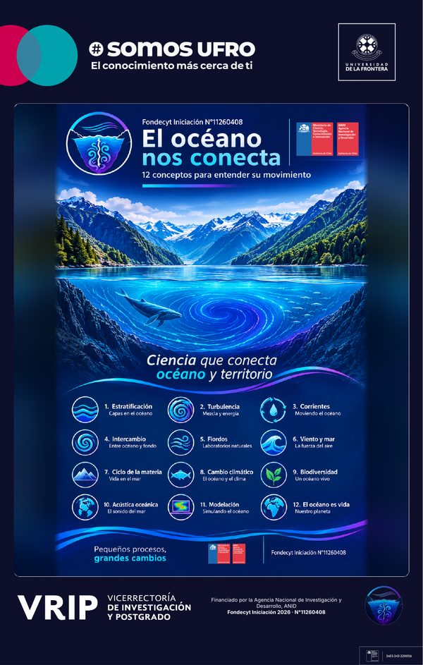
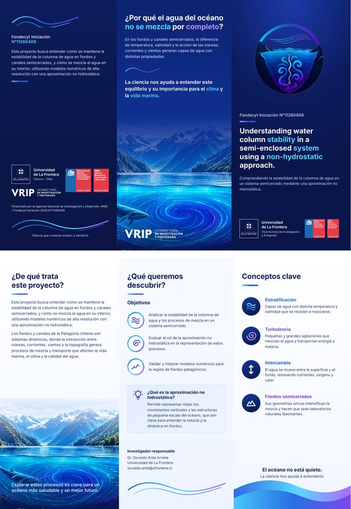
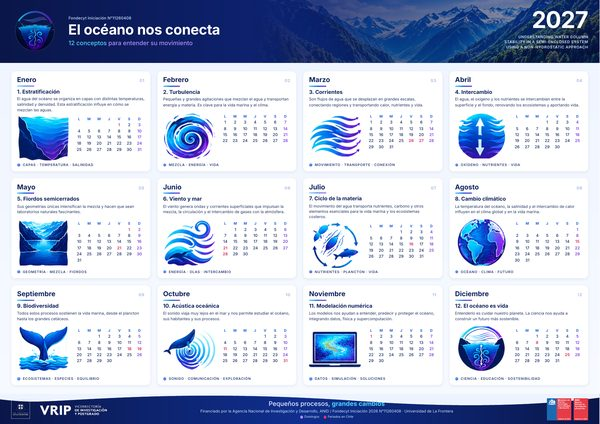
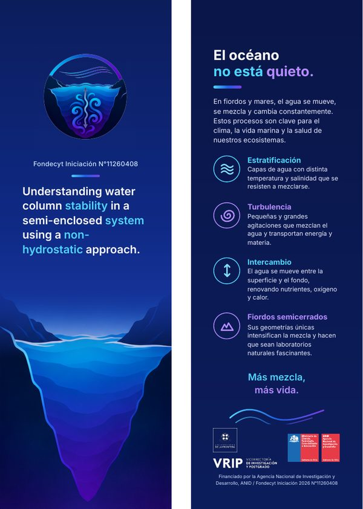
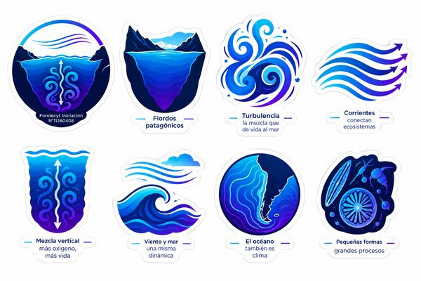

El mar también tiene saltos
Un video corto sobre los saltos que ocurren bajo la superficie del Canal Desertores.
Crocodilo Modelini
Mitad cocodrilo, mitad computador. Lleva el nombre de CROCO, el modelo con que simulamos el océano.
Pingüino Estratificato
Lleva en la panza dos capas de agua: la liviana arriba y la densa abajo.
Actividades
- Somos UFRO, noviembre 2026. Stand con el Laboratorio de Remolinos y Ondas para estudiantes de 10 a 18 años.
Material para descargar
Para profesores, colegios y quien quiera usarlo. Para imprimir y compartir.

Póster
Póster del proyecto para imprimir.
Descargar PDF (5.8 MB)
Tríptico
Tríptico A4, para imprimir por ambos lados.
Descargar PDF (1.7 MB)
Calendario 2027
Calendario 2027 del proyecto, tamaño A3.
Descargar PDF (5.3 MB)
Marcapáginas
Marcapáginas de 55 × 175 mm.
Descargar PDF (2.0 MB)

Stickers
Colección de stickers del proyecto.
Descargar PNG (1.6 MB)Notas cortas
Explicaciones breves, con un esquema, sobre los procesos que estudiamos.
Próximamente: ¿qué es un salto hidráulico interno?